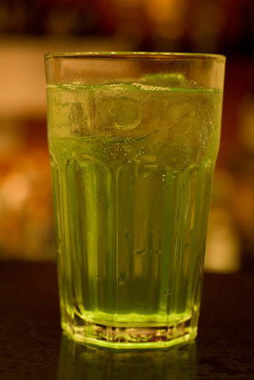

Lifestream
Description
The Lifestream, the blood of our planet that we use up every time we use Mako, or so the planetologist say. While we may not know all that the Lifestream is, we do know it is something of great importance. And so to honor that, we present the Lifestream (the drink).
Ingredients
- 1.5oz Barcardi Lemon
- .5oz Peppermint Green
- 1oz Apple Juice
- .5oz Lime
- Sprite
Steps
- Pour the barcardi lemon, peppermint green, apple juice and lime in a shaker and shake
- Pour the mix in a highball glass with ice cubes
- Top it off with sprite and enjoy
(Credits) Website: The Drunken Moogle
Back to Menu